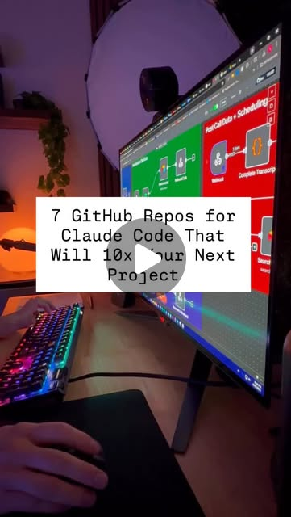
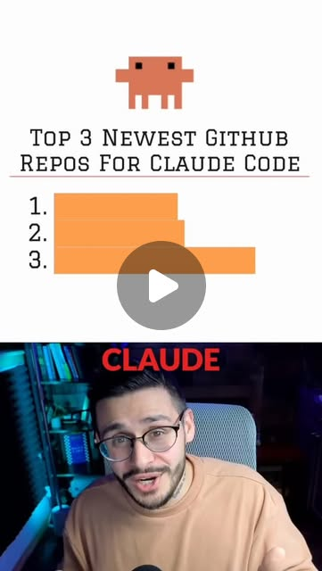

life_leverage
The Claude Code Power User's Toolkit: From Token Waste to Terminal Dominance
Claude Code's ceiling isn't the model — it's your configuration. CLAUDE.md, primer.md, hooks, parallel worktrees, and memory systems turn a chatbot into an autonomous engineering team.
Anthropic · Claude · Claude Code · MCP · Obsidian · czlonkowski/n8n-mcp · glittercowboy/get-shit-done · hesreallyhim/awesome-claude-code · kepano/obsidian-skills · n8n · nextlevelbuilder/ui-ux-pro-max-skill · obra/superpowers · thedotmack/claude-mem
Try It — Action Sketch
Write a CLAUDE.md with project rules + persona → add primer.md for session state → install hooks for automation → set up parallel worktrees for multi-agent work → install the 7 key repos → configure memory system → measure token usage and optimize.
Prerequisites: Claude Code subscription, git (for worktrees), 30 minutes to configure CLAUDE.md and primer.md
Connected Posts (6)
Boris Cherny's Claude Code workflow — parallel worktrees + plan mode
@evolving.ai summarizes Boris Cherny's X thread on how the Anthropic team actually uses Claude Code: 3-5 git worktrees in parallel, start every complex task in plan mode, update rules after every mistake, build reusable skills and subagents.
Read Guide →
Boris Cherny's personal CLAUDE.md — plan-first, self-improving rules
@keshavsuki dissects Boris Cherny's (Anthropic) personal CLAUDE.md: plan-first, subagents for complex work, self-improving lessons.md loop, hard verification standard, elegance demand, autonomous bug fixing, git discipline. High-signal template for CLAUDE.md design.
Read Guide →
primer.md + memory.sh — live-updating CLAUDE.md companion
@keshavsuki on fixing CLAUDE.md staleness: add a primer.md that Claude rewrites at end of every session (current state, next step, blockers), plus a memory.sh launch hook that injects last 5 commits and modified files, plus a git hook logging commits. Four-layer always-current context.
Read Guide →

7 must-install Claude Code repos — Obsidian Skills, n8n-MCP, Superpowers
@chase.h.ai lists 7 Claude Code repos with GitHub links: kepano/obsidian-skills, czlonkowski/n8n-mcp, nextlevelbuilder/ui-ux-pro-max-skill, thedotmack/claude-mem, glittercowboy/get-shit-done, hesreallyhim/awesome-claude-code, obra/superpowers. High-signal resource dump.
Read Guide →

Better models won’t fix your agent
Better models won’t fix your agent. — @howard.mov; demonstrates AI agents.

Claude — Burning tokens for no reason is a skill issue.
Comment “AI Agent” for Access to the 3 Repos & 40+ free Claude Code Guides & Templates. — @charlieautomates; uses Claude, Claude Code; demonstrates AI agents, automation.
Deeper Dive generated 2026-07-06T23:02:35.699301 · Curated by Claude for Gabe (@6ab3) · dejaviewed.com